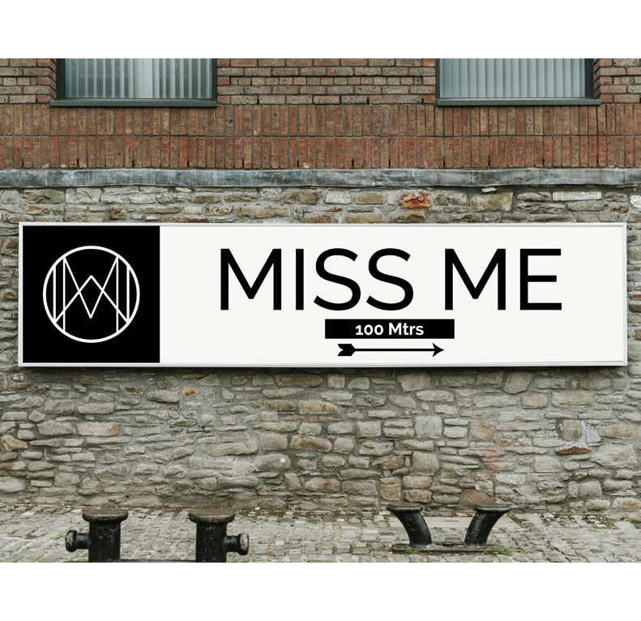
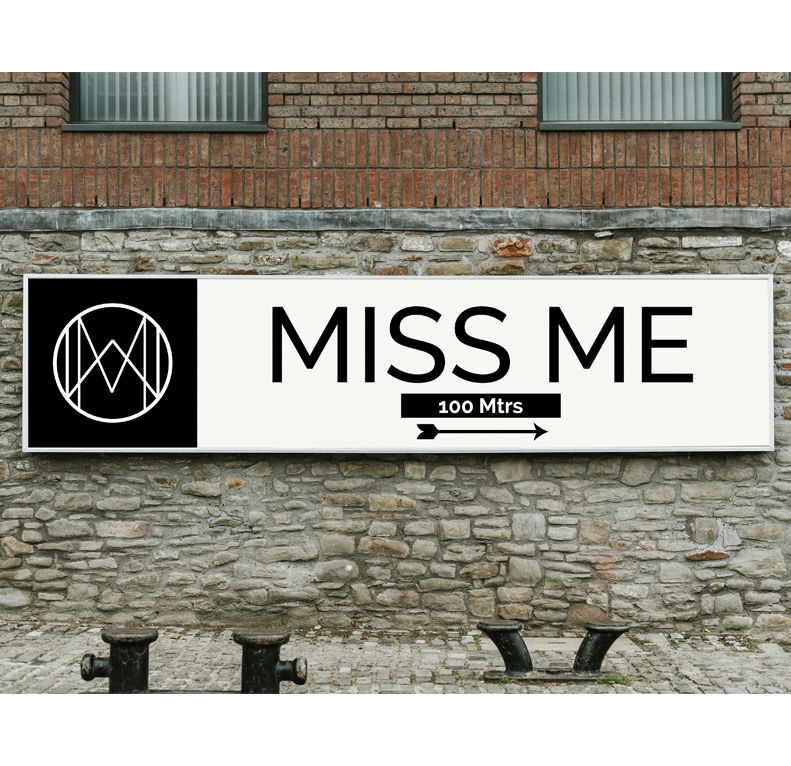

Category:
Branding Design
MISS ME FASHION BOUTIQUE
MISS ME FASHION BOUTIQUE
Women clothing Fashion Boutique Branding
Category: Branding Design
Client:Women and Girls
Project date: 2020
Brand Personality - Fashionable | luxurious | innovative | professional
The brand personality will consist of fashion, luxurious, innovative, and professionals as it would make the product as well as the brand unique on its own.
The “Miss Me” logo is a boutique for women’s clothes. Since my target demographic is just the gender of women, it targets both older women and young girls who enjoy shopping. All will find their true self “me” in the mirror in the changing area.
The women’s clothing shop has all kinds of clothes available, whether they are unemployed, or retired, disabled. You will feel again if you ever “miss” your old self. That’s why this name was chosen to let the target audience experience the nostalgia of shopping in the store. They are purchased by the brand. Therefore, behind this brand name the word ‘miss’ plays a double role.
The logo is a pattern itself as the form of the lines hold a big definition. The M was inversed and seen as W are merged which gives a new definition to the logo .
The circle represent that the brand is specifically for female gender only .
In the midde, a diamond form can be seen which depicts that the brand is luxurious and its shape depicts a woman. It can also be said that the triangle showing the peek he brand to be high class.
These two sides of triangle in the logo represent the changing rooms in left and right side.Hence, the diamond shaped can said to be the corridor also in terms of perspective and also the mirror through which the women will be able to find their real self . They will feel themselves in a new look.

 
